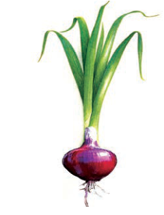
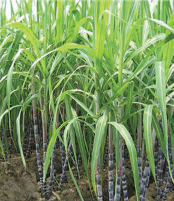

Onion

Sugarcane
Figure 20: Plants that store food in the stem
Leaves
The main function of the plant leaves is to make food for the plant. Leaves have small openings called stomata. The stomata open to allow passage of water and gases into and out of the plant and close to prevent loss of water and gases from the plant.
Plants are divided into two main groups, namely flowering plants and non-flowering plants.
Flowering plants
These are plants that bear flowers. The flowers are important for reproduction. Most of the flowering plants